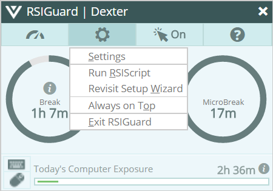
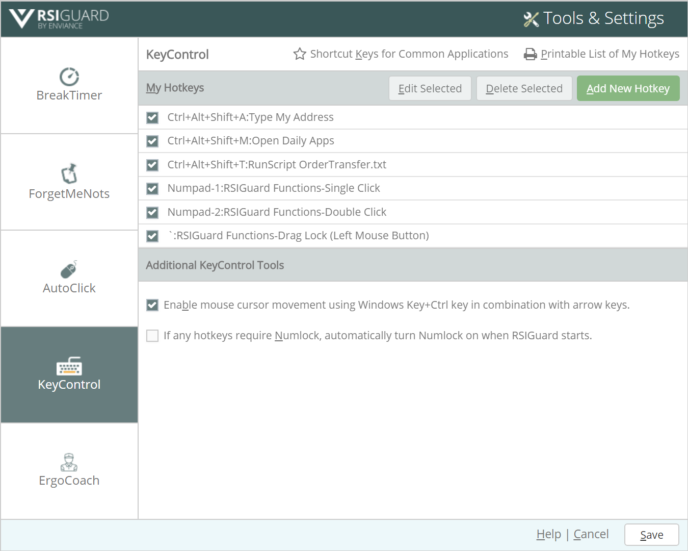
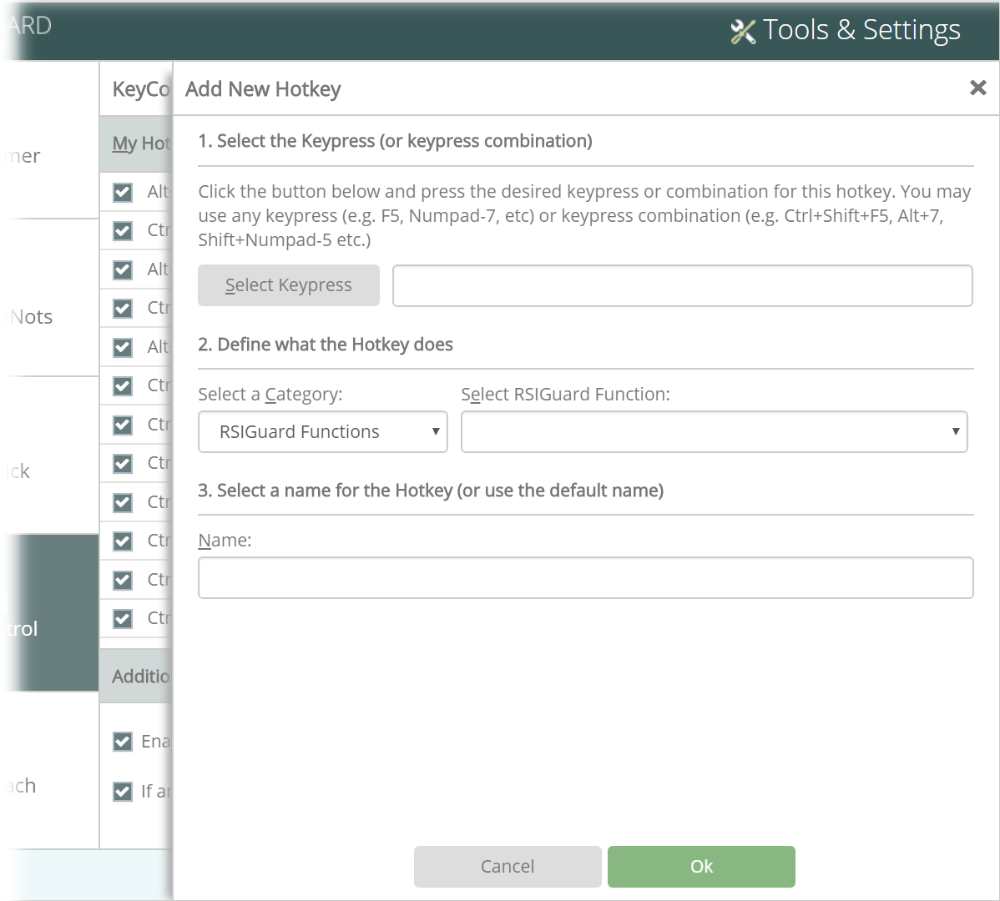

Reduce mouse strain by allowing you to do basic mouse actions (like double click or drag and drop) with less straining hotkeys
Reduce keyboard and mouse strain by taking lengthy keyboard or mouse activities and assigning them to hotkeys
Reduce keyboard strain by allowing you to re-map the keys on your keyboard to be located more efficiently
Setting up KeyControl
To setup KeyControl hotkeys, click the Tools menu of the main RSIGuard window, and select Settings.

Select the KeyControl tab. The KeyControl window opens.

The My Hotkeys section shows a list of your current KeyControl hotkeys. To temporarily disable a hotkey, uncheck the checkbox. Keep its definition in case you want to enable it again in the future. To the right of the checkbox is the key assigned to the hotkey (for example, Numpad-1 above means the hotkey is triggered by pressing the 1 key on the numeric keypad). To the right of that is the name of the hotkey you provided when you created the hotkey.
Add New Hotkey
To create a new hotkey, click Add New Hotkey or press Alt+A. The Add New Hotkey page opens.

To create a new hotkey, use the following steps:
Select the Keypress - Click Select Keypress (or press Alt+S), then press the key combination you want to assign a hotkey to (e.g., Ctrl+Shift+G). It's important to pick a combination that isn't used elsewhere (e.g., using Alt+S would interfere with the shortcut for Select Keypress). The KeyControl wizard suggests using an alternate key if it knows your choice is likely to be a problem.
Define what the hotkey does
Select the appropriate category for the key you wish to define:
Insert Text from a File - Assign a hotkey to insert the entire text contents of a text file. This is like "Type Text" but is meant for larger amounts of text. (Only available on RSIGuard Stretch or Call Center Editions for Windows.)
Do RSIScript Command - Assign a hotkey to run an RSIScript command. In this case, you don't need to create a file - you can specify the command(s) to perform in the hotkey definition. To specify multiple commands, you separate each command with a semicolon. For example, "type open www.mypage.com;wait 4;type <tab>username".
Based on the category you select, fill in the fields presented to complete the definition of the hotkey.
Select a Name - A default name is provided, but you can provide an alternate name if desired.
Click OK to save the new hotkey.
Edit Selected Hotkey
To change a hotkey, click the hotkey you want to edit. Then, click Edit Selected (or press Alt+E) to view the 3 steps described in Add New Hotkey. Make any changes and click OK to save your edits.
Delete Selected Hotkey
To permanently delete a hotkey, click the hotkey you wish to remove. Then, click Delete Selected (or press Alt+D). Click Delete in the confirmation prompt to complete the action.
Viewing Lists of Hotkeys and Shortcut Keys
Printable List of My Hotkeys - To view a printable list of your KeyControl hotkeys, click Printable List of My Hotkeys (or press Alt+P). The list opens in your default text viewer (usually Notepad) so that you can print the list of hotkeys.
Shortcut Keys for Common Applications - Click Shortcut Keys for Common Applications to select an application and available shortcut keys. When possible, different versions of the application and operating system are also presented as options.
Controlling the Mouse with Arrow Keys (only available on Windows Stretch/Call Center Editions)
Check Enable mouse cursor movement with Windows Key+Ctrl key in combination with the arrow keys to control from the keyboard where the mouse cursor points. Hold down the Windows Key and then use the arrow keys to move the mouse. You can combine 2 arrow keys to move diagonally (e.g., holding the Up arrow and the Left arrow makes the cursor move diagonally up and to the left).
RSIGuard Functions
If you select the category RSIGuard Functions, you can select from various RSIGuard-related functions:
Single Click, Double Click, Triple Click, Right, and Middle Click - Causes RSIGuard to simulate a single-click, double-click, triple-click (which selects a paragraph in some programs) or a right- or middle-click.
Skip Next Click - Causes RSIGuard to temporarily disable the AutoClick feature if enabled. AutoClick will begin clicking again after the next mouse-click you do (either by physically clicking the mouse or using one of the mouse-clicking hotkeys described in the previous item).
Drag Lock (Left, Right and Middle) - One of the most straining actions you can do with a pointing device like a mouse is to move around while tensely holding down the mouse button (an action known as dragging, even though sometimes you might be selecting rather than dragging). The Drag Lock function allows you to position the mouse where you want to start the dragging or selecting, press a hotkey, and then move the mouse around (thus dragging or selecting) without having to hold the button down or squeeze the pointing device. While Drag Lock is actively holding the button down, the icon in the system tray changes into a blinking lock. During a drag, the arrow keys make it easy to make fine horizontal, vertical and diagonal mouse movements. This can be very useful at times and allows you to precisely drag or select in ways you probably couldn't do previously. Pressing the hotkey again ends the operation by simulating letting go of the mouse button.
Show or Hide RSIGuard Window - The Show RSIGuard function causes the RSIGuard window to become visible and pop to the front of other windows. The Hide RSIGuard function causes the RSIGuard window to be hidden in the system tray. Clicking the icon in the system tray or using the Show function makes it visible again.
Take a Break Now - Causes RSIGuard to start your next break early, i.e., immediately. This is useful if you know a break is approaching, and now is a better time for you to take it than later.
Show a ForgetMeNots Now - Causes RSIGuard to show a ForgetMeNot immediately. If you have enabled ForgetMeNot microbreaks, a microbreak will accompany the ForgetMeNot.
Enable/Disable AutoClick - Pressing this hotkey toggles the AutoClick feature on and off allowing you to quickly enable the feature when you want it, and disable it when you don't.
Speak Selected Text - Pressing this hotkey causes Windows to read aloud any text that is currently selected.
Typing special characters with "Type Text" hotkeys
If you select the Type Text hotkey category, you
can create a hotkey that types a sequence of keystrokes. If you
enter something like: "(800)555-1234" then the hotkey
will automatically type this phone number.
In addition to plain text, you can
type special characters with a Type Text hotkey using
'escape' sequences. Here are some example escape sequences:
The key you want to type
What you should put in the hotkey text (except for F-keys, these are not case sensitive)
Ctrl/Control key
<ctrl> (include characters to be "modified" in < >,
e.g. <ctrlc> to specify Ctrl+C for copy hotkey). You can nest escapes, like <ctrl<F4>> for Ctrl+F4
Note that you can isolate the down and up portion of a keystroke. For example, to create a hotkey that does a 'Ctrl-Left Click' (press Ctrl, click mouse, release Ctrl), you would select the category 'Do RSIScript Command' and enter the command: "type <ctrl;mouse click;type </ctrl>". The first command, "type <ctrl", presses the CTRL key without releasing it. The second command "mouse click" clicks the mouse. The third command "type </ctrl> releases the CTRL key. Click here for more information about writing RSIScript.
 menu of the main RSIGuard window, and select Settings.
menu of the main RSIGuard window, and select Settings.